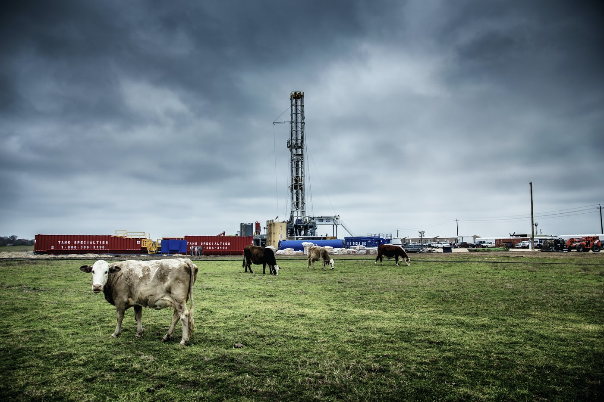

Livestock in Texas
Texas has one of the largest cow herds in the U.S. This includes cattle, calves, and dairy cattle. Texas has about 94 million head.
Texas has some of the biggest livestock shows and rodeo in the U.S. These shows and rodeos are held in Houston, Austin, and San Antonio.
